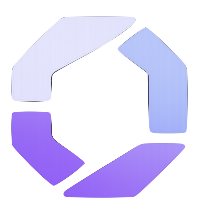

OkalitA progressive Web Components framework built on top of Lit, supercharged with signal-based reactivity via uhtml, modern TC39 decorators, and clean modular architecture. No virtual DOM overhead. Zero boilerplate. Absolute control.
import { Okalit, html, defineElement } from '@okalit/core'; import styles from './my-counter.scss?inline'; @defineElement({ tag: 'my-counter', styles: [styles], props: [ { count: { type: Number, value: 0 } } ] }) export class MyCounter extends Okalit { render() { return html` <p>Count: ${this.count.value}</p> <button @click=${() => this.count.value++}>+1</button> `; } }
What is Okalit?
Okalit is a progressive Web Components framework built on Lit, enhanced with signal-based reactivity via uhtml, modern TC39 decorators, and a modular enterprise architecture. Uncompromised performance meets absolute control.
Built on Lit's secure, modern browser native baseline. Write clean, platform-compliant components in pure JS that run inside any HTML page without complex compiler transformations.
Powered by uhtml's fine-grained signal primitives, state changes propagate directly to DOM nodes through Lit's rendering engine. No virtual diffing — only what truly changes gets updated.
Utilize standard and standard-compliant JavaScript decorators. Clean class definitions, autowired states, and service-injection parameters make codebase maintenance a breeze.
Opinionated Enterprise Architecture
Discover why Okalit is ready for complex, scalable web platforms right out of the box. Click each architectural feature to interact with its live simulator below.
Traditional VDOM frameworks recalculate whole virtual trees and patch differences. **Okalit Signals** target precise HTML text nodes or attributes.
Re-executes layout functions & checks children tags on every keystroke.
Fires pointer-bound node updates directly without re-rendering parent tag.
import { signal } from '@okalit/core'; // uhtml 5.x signals
Write less code. Get more performance.
Okalit eliminates the bloat from standard state containers and component boilerplates. Let's look at how intuitive a routed multi-state container app looks.
import { AppMixin, defineElement, html, Okalit } from '@okalit/core';
import routes from './app.routes.js';
@defineElement({ tag: 'main-app' })
export class MainApp extends AppMixin(Okalit) {
static config = {
routes,
modeDebug: true,
obfuscateChannels: true,
i18n: { locales: ['en', 'es'], default: 'en' },
template: (content) => html`${content} `,
};
}
Generate ready-to-run microfrontends, modules, or complete SPA applications with our custom-tuned terminal CLI utility. Configure ES Modules, Sass, routing, and i18n modules out of the box.
Run the wizard and configure your styling, tooling, and backend connections.
Use standard decorators and signals to link clean architecture states fluidly.
Near instantaneous interaction readiness thanks to lightweight baseline structures.
Combines base engine structure with Signals without bloating initial bundles.
Runs in native Custom Elements registries and works flawlessly alongside React or Vue.
Reactivity values skip structural updates to immediately access actual elements.
Ready to experience a modern, performance-first developer framework built natively for the web platform? Step up to Signals with zero virtual DOM overhead.